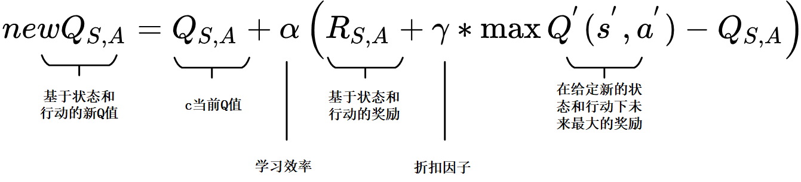
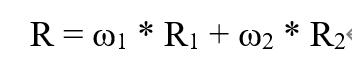
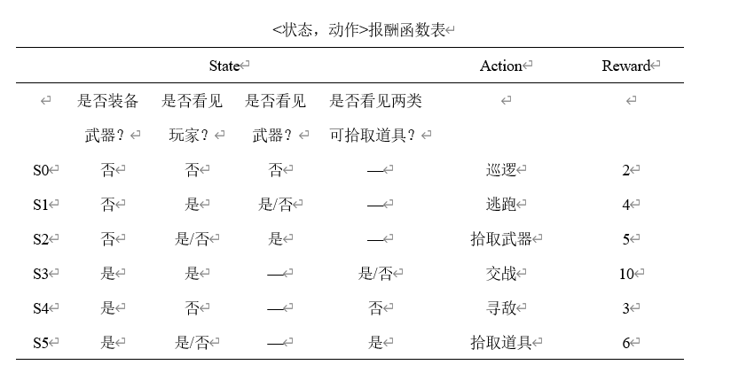
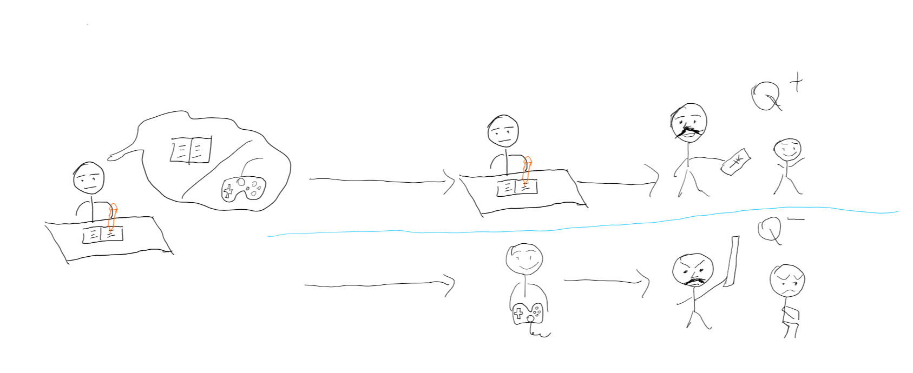

基于Q学习算法和虚幻4蓝图建立的游戏AI系统
该项目为本人本科毕业设计作品
获得2020届校级优秀毕业设计
该游戏AI系统以Q学习算法改进行为树的方法完成
该游戏AI系统建立背景
“游戏AI”通常用来代指游戏中的NPC(Non-Player Character，非玩家角色)。虽然名称中带有AI，
但NPC的行为逻辑在当今大多商业游戏中却不具有人工智能的智慧性和自我学习能力。出于风险成本的考虑，以及设计难度较高的原因，
大多数商业游戏开发团队都会选择使用逻辑固定的代码来实现NPC的行为逻辑，例如常用的有限状态机和基于有限状态机改进的行为树。
这种模式固定的NPC行为逻辑，在针对不同的玩家行为时，只能做出有限的反馈，这种缺陷就使得玩家容易产生疲惫心理，也使得游戏的生命周期被大大缩短。
为了尽量减少模式固定的NPC行为逻辑中存在的漏洞，游戏开发者不得不在开发过程中花费更大的精力来考虑NPC在游戏中可能面临的处境的所有情况。
因此，无论是玩家消费者还是游戏开发者，都需要复杂性较低，拓展性较好的游戏AI开发技术。而人工智能技术的发展为具备这些特性的游戏AI开发技术提供了基础。
部分效果展示视频
展示视频中首先展示了当游戏NPC（非玩家角色）遭遇了战斗能力较强的玩家时的两种模拟情况：
- 在NPC装备了武器的情况下，NPC同时看见了玩家和可使玩家瞬间死亡的道具（此时NPC有两种动作选择——与玩家交战/拾取道具），NPC选择了避免与玩家交战，进行拾取道具的动作以获取最大收益。
- 在NPC在未装备武器的情况下，NPC同时看见了玩家和武器道具（此时NPC有两种动作选择——逃跑/拾取武器进而与玩家战斗），NPC选择了逃跑以获取最大收益。 之后，视频还展示了在同样条件下，NPC由未改进的行为树驱动行为决策的情况——由于未改进行为树中拾取武器的优先级更高，NPC选择了拾取武器。
随后，该视频展示了当NPC遭遇了战斗能力较弱的玩家时的两种模拟情况：
- 在NPC装备了武器的情况下，NPC同时看见了玩家和可使玩家瞬间死亡的道具，NPC选择了与玩家交战，以获取最大收益。
- 在NPC未装备武器的情况下，NPC同时看见了玩家和武器道具，NPC选择了拾取武器，进而与玩家交战以获取最大收益。
Q学习算法原理简述
上图为Q学习算法中的Q函数（学习函数）公式

上图为R函数（奖励函数）公式

上图为该系统所用报酬函数表，即R函数中的R1
举个例子来说明
假设现在我们处于写作业的状态而且我们以前并没有尝试过写作业时玩游戏, 所以现在我们有两种选择 , 1, 继续写作业, 2, 去玩游戏. 因为以前没有被罚过, 所以我选玩游戏, 然后现在的状态变成了玩游戏, 最后爸妈回家, 发现我没写完作业就去玩游戏了, 狠狠地惩罚了我一次,此时我获得了惩罚数值（获得了负的Q值） 我也深刻地记下了这一次经历, 并在我的脑海中将 “没写完作业就看电视” 这种行为更改为负面行为,（在Q值表中将写作业状态下玩游戏的动作记为负值）。 下一回写作业时面对继续写作业还是玩游戏的两难选择，我将会选择收益最大的动作（即Q值最大的动作），即继续写作业（尽管当前写作业的Q值为0，但玩游戏的值为负），以获得最大收益。
游戏中的NPC与上述例子类似。在初始阶段，NPC对于游戏环境的认知几乎为零（Q值表中所有的状态-动作对应的值均为0）。NPC通过不断地与游戏环境交互获得奖励或惩罚值，并利用Q函数更新不同状态下 的不同动作对应的Q值。当Q值收敛后，NPC总会在一个状态下选择具有最大Q值的对应动作。 由于Q值收敛到某一确定值往往需要通过很多步的学习才能得到，因此一些研究会凭借经验人为地构造一个状态-动作奖励函数表（R值表），为智能体提供一定的先验知识， 以达到加速Q值收敛的目的。奖励函数表也对NPC的学习走向具有重要意义。